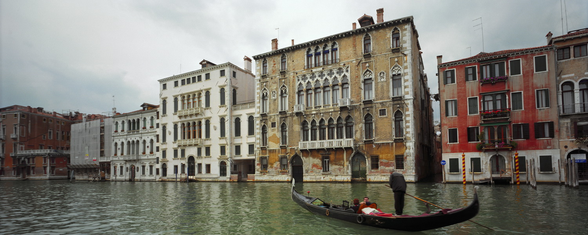
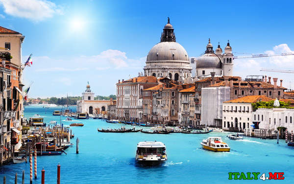
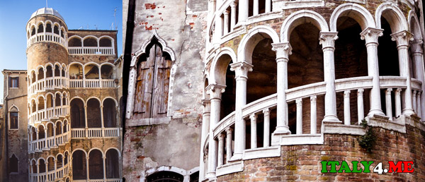
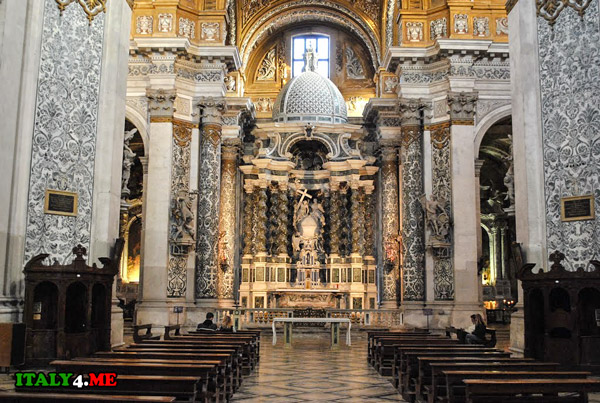

 Вене́ция (итал. Venezia ) — город в Италии, административный центр области Венеция и провинции Венеция. Образует коммуну, разделённую на 6 самоуправляемых районов. Покровителем города считается апостол Марк, евангелист, чьи мощи хранятся здесь же в Соборе Св. Марка, в связи с чем в город всегда приезжало много паломников-христиан со всего мира. Население — 264 579 человек (декабрь 2014 года). Расположена на материке (после объединения с городом Местре в 1926 году) и 118 островах Венецианской лагуны Адриатического моря. Подвержена осенним наводнениям от нагонной волны со стороны моря. Крупный туристический и научно-образовательный центр. В материковой части — морской порт и международный аэропорт Марко Поло, нефтеперерабатывающий и другие заводы. Место проведения Венецианского карнавала и Венецианского кинофестиваля.
| Страна | Италия |
| Область | Венеция |
| Координаты | 45°26′00″ с. ш. 12°19′00″ в. д.HGЯO |
| Внутреннее деление | 6 районов |
| Мер | Луиджи Бруниаро |
| Площадь | 415,9 км² |
| Высота НУМ | 2,54 м |
| Население | 264 579 человек (2014) |
| Плотность | 2229,75 чел./км² |
| Агломерация | 304 674 |
| Названия жителей | Венецианец, венецианка |
| Часовой пояс | UTC+1, летом UTC+2 |
| Телефонный код | +39 41 |
| Официальный сайт | comune.venezia.it |
Что посмотреть в Венеции
Санта Мария делла Салюте Собор, возвышающийся в самом начале Гранд Канала, часто называют просто Салюте, и это одна из самых любимых церквей венецианцев. Санта Мария делла Салюте (Santa Maria della Salute) была построена в 1681 году в честь спасения Венеции от двухлетней эпидемии чумы. С тех пор монументальный барочный фасад и купол, спроектированные архитектором Бальдассаром Лонгена (Baldassare Longhena), стал иконой панорамы Венеции.
Здесь также сохранились полотна Тициана и Тинторетто и других именитых художников. Напротив входа в собор установлен понтонный мост через Гранд Канал, по которому тысячи паломников проходят в собор на празднование Festa della Salute (досл. Праздник здоровья), отмечаемого 21 ноября.
Ажурной винтовой лестнице Контарини дель Боволо (Scala Contarini del Bovolo) стоит присвоить звание самой «скрытной» достопримечательности Венеции, затерянной в мозаике узких улочек недалеко от моста Риальто. Чтобы до нее добраться, следует от площади Campo San Bartolomeo у подножия моста Риальто идти по желтым указателям до Accademia, пока не достигнете площади Campo Manin, где на маленькой панели, которую очень просто не заметить, указано направление на Лестницу.
После многочисленных поворотов налево-направо, вы неожиданно для себя выйдете в небольшой дворик, на котором безраздельно главенствует спиралью возвышающаяся лестница, изрезанная арками. С тех пор, как в 1499 году к семейному дворцу семьи Контарини была пристроена эта лестница, сам он стал абсолютно незаметен снаружи.
Несмотря на официальное название − Церковь Санта Мария Ассунта (Chiesa di Santa Maria Assunta), − этот грандиозный собор в стиле барокко больше известен под именем ордена Иезуитов (Gesuiti), заказавшего его строительство в 1715 году. Мало того, что церковь красива сама по себе и вход в нее бесплатный: Джезуити может похвастать прекрасной коллекцией картин и скульптур. В главном зале церкви находятся работы Тициана и Тинторетто, который жил неподалеку, а в ризнице хранятся 20 картин Джакома Пальма Младшего (Jacopo Palma il Giovane). В непосредственной близости от церкви расположен бывший монастырь иезуитов. За свою историю он был и школой, и больницей, и военной казармой. Относительно недавно его перестроили под студенческое общежитие с открытым для публики кафе и монашескими кельями.
Венеция по карману: где недорого поесть и переночевать
Очень часто мы слышим, что Венеция – очень дорогой для путешественника город, и что за чашку эспрессо здесь придется отдать все 5 евро. На самом деле, почти в любом туристическом городе вас будут ждать точно такие же цены. Секрет пребывания в таких городах прост: нужно знать, куда ходить. И что может быть лучше, чем получить подробную инструкцию о том, где стоит есть в Венеции, из первых рук, от местного эксперта! В таком городе, как Венеция, находится огромное количество ресторанов, пабов и баров, возможно, на каждого местного жителя приходится даже не по одному заведению! Более того, ежегодно в город приезжает около 20 миллионов туристов, так что почти в каждом месте вам смогут предоставить туристическое меню. Вот только если вы выберете уж очень недорогое заведение, никто не сможет гарантировать вам качество приготовленной еды.
Al Portego: классический венецианский «бакаро» - это то место, где обязательно нужно побывать, и не только из-за их превосходных закусок «чикетти», но и из-за первоклассных рыбных блюд, например, кальмары в чернилах с полентой. Стоимость одного обеда: около 15 евро на человека.
Caffé Noir: бар, расположившийся всего в паре шагов от Кампо Санта Маргерита (Campo Santa Margherita), излюбленное место студентов – сюда они ходят за вкуснейшими и сытными сэндвичами.Стоимость одного обеда: около 10 евро на человека.
Trattoria da'a Marisa: Порции же в этом месте просто не могут не радовать. Стоимость одного обеда: около 15 евро на человека.
Generator Venice: этот хостел расположился в старинном переоборудованном здании амбара на острове Гвидекка. Отсюда открывается превосходный вид на площадь Святого Марка, ведь хостел находится прямо напротив, на другой стороне Гранд Канала. Здесь вы можете остановиться как в общем, так и в частном номере, с ванной комнатой в номере или же на этаже. Комнаты от 24,45 евро с человека.
Santa Fosca: хостел был частично выстроен в старинной церкви Сервитов (построенной в 1400). Комнаты здесь довольно просторные. Вы сможете остановиться в смешанной или женской комнате. Здесь также можно поиграть в футбол или баскетбол на площадке у хостела. Комнаты от 25,60 евро с человека.
Pescheria Backpacker: яркий хостел находится в двух шагах от Риальто (Rialto), и построен в здании 15 века. Расположен хостел превосходно – в сердце Венеции, недалеко от многих главных достопримечательностей. Комнаты от 25,50 евро с человека.
Hotel & Hostel Colombo For Backpackers: задумка хостела довольно проста – предоставлять недорогое жилье путешественникам силами путешественников. Хостел расположился в нескольких минутах от вокзала Местре (Mestre). Здесь вы сможете выбрать между общими и одиночными комнатами – во всех комнатах установлены кондиционеры и есть WiFi. Комнаты от 20,76 евро с человека.
Фото:
  